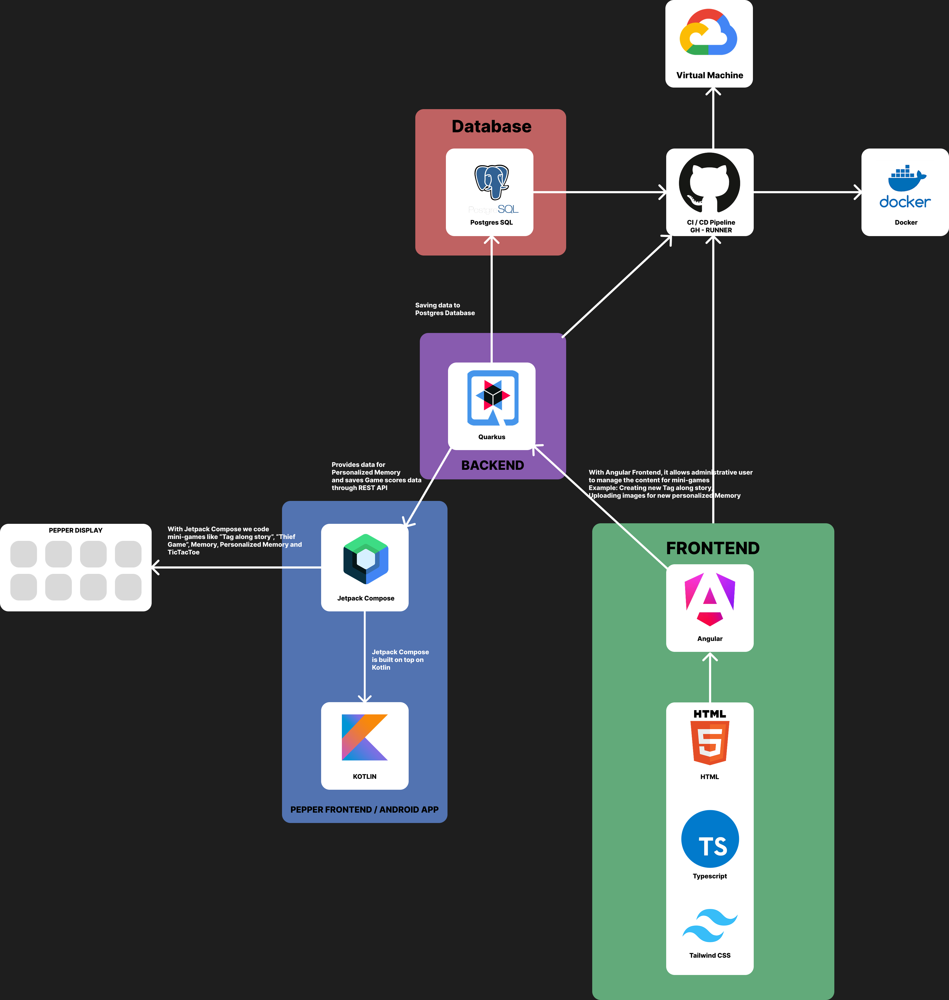

PEPPER

Kyaw | Obaid | Milad | Nikola | Emil | Moritz | David | Amir
Software für Pepper
Ziel: Unterstützt Senioren im Heim.
Mit-Mach-Geschichte: Kleine Turneinheit mit Erlebnisse. Ziel: Bewegung + Unterhaltung.
In unserer Version können Angestellte eigene Geschichten mit Bildern erstellen, um Erlebnisse neu zu gestalten oder wiederzuerleben.
Memory
Memory: Klassisches Memory mit persönlichen Bildern.Ziel: Erinnerungen und Momente wachrufen.
Fang den Dieb
Fang den Dieb: Spiel für schnelle Senioren, die Herausforderung suchen.Systemarchitektur
ERD
Gruppenverteilung
Kyaw, David, Milad: Backend, Deployment
Obaid, Nikola, Amir: Android Entwicklung (Pepper Software)
Emil, Moritz: Web Entwicklung
Userstory: Mit-Mach-Geschichte
Als Pflegekraft möchte ich mit der App Mit-Mach-Geschichte Senioren unterstützen, damit ihre Erinnerungen aktiviert werden und sie zum Mitmachen animiert werden.
Userstory: Mit-Mach-Geschichte Web App
Als Pflegekraft möchte ich mit der Web App Mit-Mach-Geschichte Senioren eine interaktive Geschichte erstellen können, um ihre Erinnerungen zu aktivieren und sie zum Mitmachen zu animieren.